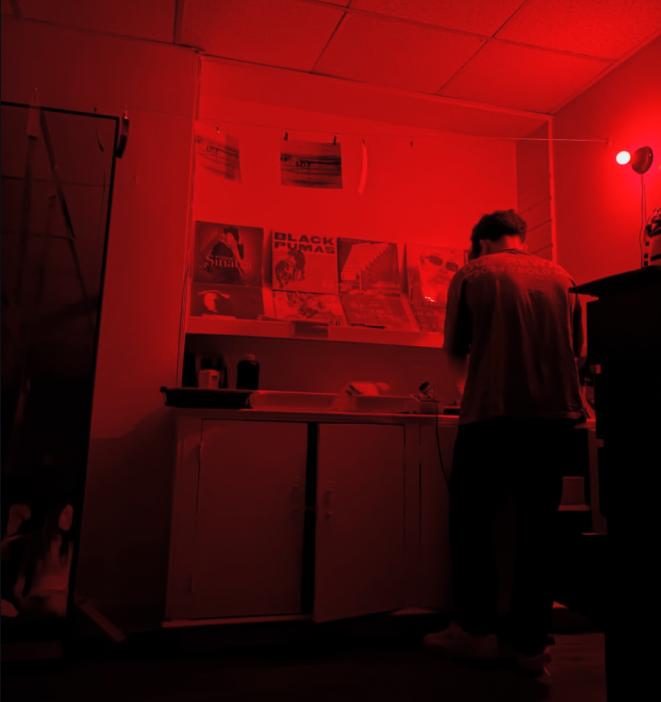

Film photography started as a curiosity and turned into something close to an obsession. There's a fundamentally different relationship with images when you're shooting on film — you only get 36 exposures on a roll, so every frame means something. You slow down, you think before you shoot, and you learn to trust your eye rather than the instant feedback of a screen. The darkroom is where it all comes together for me. I built mine from scratch — which, yes, cost more than I'd like to admit — but developing your own prints by hand is an experience unlike anything else. You're standing in total darkness, loading film onto a reel by touch alone. Then the chemistry does its thing: developer, stop bath, fixer. You hang the negatives to dry and wait. When you finally hold a strip up to the light and see your images for the first time, it never gets old. Printing in the enlarger is its own art form — you're dodging and burning, adjusting contrast, making decisions that are permanent. There's no undo button, and that's exactly what I love about it.

If the darkroom is about slowing down, kitesurfing is the exact opposite. It's pure speed, wind, and water — and learning it is one of the most humbling things I've ever done. The kite has a mind of its own when you're starting out, and the ocean doesn't care about your learning curve. But once it clicks, there's really nothing like it. You're harnessing the wind, riding swells, and covering ground in a way that feels almost unreal. On a good day with the right conditions, everything else disappears — whatever's on your mind, whatever stress you're carrying, it all goes quiet. It's also one of those sports where you never stop learning. There's always a new trick, a stronger wind condition to handle, or a new spot to explore. That progression is what keeps me hooked.